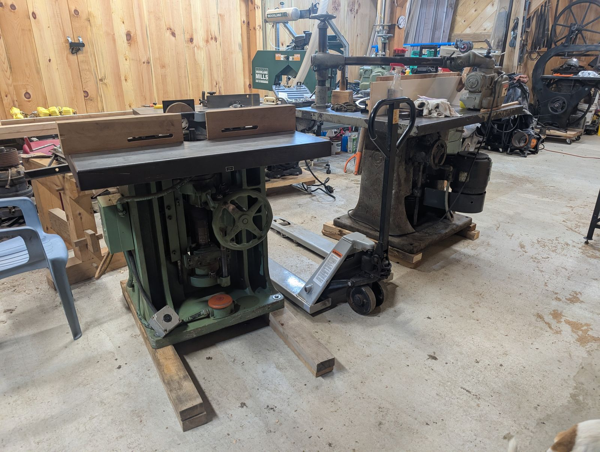
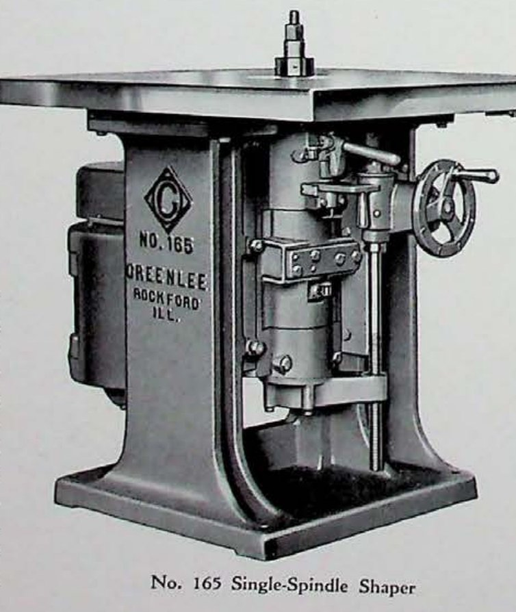

No. 165 Single-Spindle Shaper
High-speed profile work · 100-Series · August 1967

The machine
The single-spindle shaper is the trade’s all-rounder: one vertical spindle, a profiled cutter, and whatever the shop needs next — moldings, edges, rabbets, curves run against a collar. By 1967 the type had been refined for the better part of a century, and the 165 is the late, high-speed expression of it: faster spindles for smaller cutters and cleaner finishes, with the controls and guarding of a modern production floor.
This example
Serial 88001 followed its partner — the No. 180 double-spindle shaper, serial 87801 — out of Rockford by two hundred serial numbers and two months, in August 1967. They were a matched pair of high-speed machines, and they have never been separated: not in their working life, and not now. Collections usually gather machines one at a time from scattered places; keeping a pair together across six decades is the rarer thing, and reason enough to give these two facing pages.
Together with the 1929 No. 175, the pair closes a forty-year arc of Greenlee shapers — from pre-crash mass to post-war speed, the same idea perfected twice.
From the Catalog

“The No. 165 Single-Spindle Shaper is a machine suitable for either light or medium-heavy work where a single spindle is sufficient… These machines have been designed for extremely high spindle speeds.” Greenlee belted-shaper bulletin · general-line catalog, 1930s
The bulletin shows the model line a full generation before this machine was built — Greenlee kept its model numbers for decades, refining the pattern beneath them.
Catalog scan courtesy of VintageMachinery.org.
Through the Catalogs
The single-spindle shaper in the belted-line bulletin, and the full machine line of 1958.
Every frame links to the full publication in the Paper Archive — scans courtesy of VintageMachinery.org.